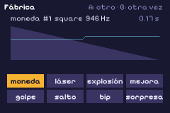
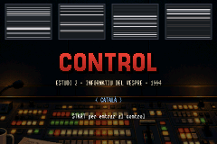
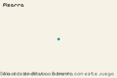
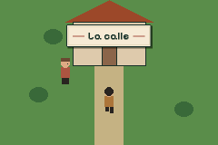
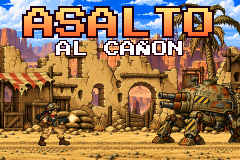

Ejemplo de pinyol
Sonidos
Sonidos hechos con números (una fábrica de monedas, láseres y explosiones), un theremin con el dedo, un motor que sube con la velocidad y música en capas que se encienden y se apagan.
Las cifras
- Visitas
- —
- Partidas
- —
- Tiempo jugado
- —
- Me gusta
- —
- Comentarios
- —
- En el ranking
- —
Las cifras se actualizan una vez al día.
La ficha
- Licencia
- código MIT · arte y sonido CC0
- El .zip
- 844 KB
Comentarios y votos
Vota con una reacción (👍 ❤️ 🎉 🚀) y deja tu comentario con tu cuenta de GitHub. Los votos ordenan el ranking y eligen la portada de la semana.
Los comentarios y los votos llegan muy pronto.
Se cargan desde giscus.app, con los comentarios guardados en GitHub, solo cuando los pides.
Más juegos



